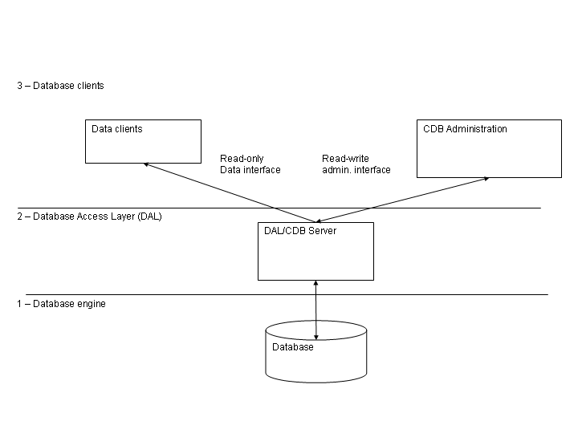

Configuration Database
The configuration parameters for all Components and, in
particular, for all Characteristic Components, i.e. the initial
values for Properties values and all Characteristics for Properties,
are persistently stored in the Configuration Database [RD01
- 4.2.1. Configuration Database]. Any application can make use of
the Configuration Database to get access to configuration
information.
There are 4 different issues related to the problems addressed by
the CDB:
1) input of data by the user
System configurators define the
structure of the system and enter the configuration data. Easy and
intuitive data entry methods are needed.
2) storage of the data
The configuration data is kept into
a database.
3) maintenance and management of the data (e.g.
versioning)
Configuration data changes because the system
structure and/or the implementation of the system’s components
changes with time and has to be maintained under configuration
control.
4) loading data into the ACS Containers
At run-time, the data
has to be retrieved and used to initialize and configure the
Components.
The main objective of the CDB Architecture is to keep these 4
issues as decoupled as possible so that:
We can develop them separately, in
space and time, according to the project priorities and the
availability of resources.
We can eventually use different
technologies
We can, in particular, support multiple data storage
mechanisms (like ALMA Archive, RDBMS and XML files) in different
environments (development, testing, final running system).
The high-level architecture is based on three layers:
1) The Database Itself
It is the database engine we use to
store and retrieve data.
2) The Database Access Layer (DAL) is used to hide the actual
database implementation from applications, so that it is possible to
use the same interfaces to access different database engines, as
described in the requirements and discussed in the following
sections.
3) The Database Clients, store and retrieve data from the database
using only the interfaces provided by the DAL.
Data Clients, like
containers, Managers and Components retrieve their configuration
information from the Database and are involved in issue 4.
On the
other hand, CDB Administration applications are used to configure,
maintain and load data in the database using again interfaces
provided by the DAL layer. They are involved in issue 1 and 3 and
will be possibly using DAL interfaces different from the ones used by
the Data Clients, as will be discussed later on.
Notice that
Data Clients need only data retrieving and not data change functions.

Figure 3.4: Configuration Database architectural
layers
A Database Loader application is used to manipulate database
description files and load them into the Database using the DAL
administrator interfaces. Database Description Files are XML files
and XML Schemas are used to define classes of database entities,
allowing to use inheritance and to define default values. The
Database Loader also takes care of validating the data, to make sure
that only valid and consistent data is actually loaded into the
database. For example, the following inconsistencies should be
spotted and reported:
missing property or characteristic
undefined values, default will be
used
defined values that are not used elsewhere
When a Characteristic Component is instantiated, it configures
itself according to the configuration stored in the Configuration
Database[RD01 - 3.3.2.
Serialization].
The implementation of the Configuration Database is hidden in a
Configuration Database Access API to allow switching among
alternative implementations[RD01
- 4.2.2 Database Design].
The reference implementation is based on XML files and a Java
application loads and parses the XML files. Files are validated at
run time and a separate CDB checker can be used to validate offline
CDB XML files without the need of loading them in a "live"
database.
In ALMA, configuration information is stored in the Telescope and
Monitoring Configuration Data Base (TMCDB). This is based on the
Oracle RDBMS (with the small-footprint RDBMS, hsqldb, used for
small-scale testing). Archive, Control and ACS subsystems are
responsible for the implementation of the Configuration Database
Access API on top of the TMCDB, throught the implementation of a
specific Component. This implementation includes round-trip tools to
convert CDB instances between the XML reference implementation and
the TMCDB. In this way it is possible to develop locally with the XML
implementation and transparently migrate to the final system based on
the ALMA Archive and TMCBD. (Being enhanced).
All Components have access to the Configuration Database during
construction/initialization and later during their operational life.
While accessing the CDB is optional for normal components,
Characteristic Components must retrieve their configuration
information from there.
At a higher level, the Container
responsible for the Components (see Container package) provides an
interface to set the reference to the configuration database used. In
this way it is also easy to switch between different databases at
startup time.
In order to allow switching
between different instances of Configuration Database, the reference
to the DAL used by each Component is provided as a common service by
the Container inside which the Component lives.
Whenever a Container is started,
it gets in touch with a specified DAL instance.
By default, if nothing else is
specified, this is the DAL for Central Configuration Database and is
obtained by requesting the reference to the Manager.
Otherwise, the container can be instructed to use explicitly
another DAL instance, apt to work with a Configuration Database
Engine of one of the supported types.

Figure 3.5: Configuration Database
We define Characteristics as statically defined in the
Configuration Database. This means that is possible to change their
value only by changing the configuration database and reloading just
the corresponding Characteristic Components[RD01
- 14.1.9 Dynamic configuration]. This means that they cannot be
used for, e.g., calibrations that change at run time. With this
definition, calibration values that change at run time should be
implemented as Properties, not as Characteristics. "Static"
calibration values, for example measured by an engineer and not
supposed to change for months can be Characteristics. Characteristics
can change with time or can change with the context.
Note:
It is possible to implement also a more dynamic mechanism, but we
have not identified a requirement for ALMA. This can be done
transparently at a later time extending the Property class with
methods to change the value of characteristics but this has not been
considered in the first design to avoid increasing the complexity of
the system. (Implementation not foreseen for ALMA)
Note:
A Visual Configuration Tool (CT) can be implemented on top of the
Database Loader. This can be completely independent of all other
aspects of CDB and therefore can be implemented at a later stage.
ALMA configuration data is edited using the TMCDB tools and therefore
no requirement for such Visual Configuration Tool has been
recognized. The basic features are described hereafter for a possible
future implementation (Implementation not foreseen for ALMA)
The
CT allows to visually edit the structure/schema of the configuration
database and to fill in the values inside the instantiated database.
The
CT supports expressions and variables.
Allows
switching between different views (think of Eclipse): source,
members, hierarchy, editions, and visual composition. Like in
Eclipse, there should be wizards that help create new structures,
but the structures can be created also manually. Structures can be
changed using connections and drag&drop.
An
existing CDB can be parsed and displayed visually, for easier
re-engineering.
There
is a tree view in CT that uses colour codes and icons to define
classes or properties that are abstract, inherited, calculated (from
expressions) and imported from templates.
A
“spreadsheet view” is used for mass population of configuration
data. The normal approach is to define the structure with the tools
just described, and then to write a substitution file, which
contains data in compact form in a table that is similar to a
spreadsheet. Ideally, it should be straightforward to create such a
substitution file in a spreadsheet program and use it from there
directly.
The
development of CT will be based on existing tools. For example it
could be an Eclipse plugin.